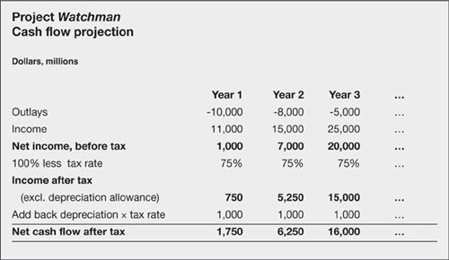

Will it pay off?
How do you assess the financial viability of the proposed project? I am about to walk you step by step through the decision process, starting with the initial forecasting. Before I do, let me mention two yardsticks which are sometimes used – payback and return on investment (ROI). These are simple, but inaccurate. We will go on to discuss better measures later in this chapter.
Payback
It is common to hear executives talk about payback – the amount of money that a project pays out and the speed with which it happens. This project pays back 10,000 in 12 months. By itself, this is not a very useful statement. However, a company with cash flow problems might become concerned primarily with making a fast return. This is one situation where payback might take precedence over value.
Return on investment
Various measures of return on investment (ROI) were discussed in Chapter 19 – return on capital employed, assets and equity. The metric to use depends on your perspective (manager, lender, shareholder). Calculating these measures for historical periods is straightforward when using figures from financial accounts, as already indicated.
When looking ahead, a simplified measure of return on investment (capital employed) is frequently but misguidedly used to assess projects. For example, if a project costs $100 and pays back $10 this year and $40 the year after, the return on investment is 50%. The figure is sometimes annualized crudely by dividing it by the life of the project in years – giving a yearly return of 25% in this instance. Either way, simple ROI ignores the time value of money, compounding and risks. If the payback was $40 this year and $10 next year, the ROI in this example is unchanged, even though the risks are reduced.
‘The first 90% of a project takes 90% of the time, the last 10% takes the other 90% of the time.’
—Anon.
|
Step 1: Make your cash flow forecasts
The first step is to draw up a cash flow forecast for each project. You need to estimate all revenues and expenditure and draw up a cash flow forecast (as discussed in Chapters 10 to 16). Figure 21.1 shows a brief summary showing the after-tax cash flow. Note that depreciation is added back in because it is a bookkeeping deduction, not a cash payment. Cash flow does, of course, include the actual capital outlays on fixed assets.
Fig 21.1. Projecting a stream of income
Step 2: Choose the valuation technique
The key measures used for valuing projects are net present value and internal rate of return. I am sure that you recall meeting these oddly named metrics in Chapter 6.
Net present value is the current value of a project at a given discount (interest) rate. Watch though, that at different interest rates, different projects become more attractive because of the varying valuations of future income and payments. One decision that you do have to make is the correct discount rate to use. In fact, the discount is usually called the hurdle rate when applied to project appraisal. More on this in a moment.
The alternative, the internal rate of return is simply the compound interest rate that links the present and future. Think of it as the interest rate that a bank would have to charge if it were to make you a loan (the project cost) that was going to generate the projected future stream of repayments (the returns).
Choosing between twins
You can probably see that net present value and internal rate of return (IRR) are the same thing approached from different angles. The internal rate of return is quoted as a percentage figure that feels friendly. However, there are occasions when IRR is impossible to calculate (you might find this if you switch from negative to positive cash flows several times). Moreover, with internal rate of return, the reinvestment rate is the calculated IRR, whereas with net present value the reinvestment rate is the discount rate that you specify – which is superior. The metric you use might be dictated by company policy. If not, you pay your money and take your choice.
Step 3: Identify the hurdle rate
The hurdle rate is a yardstick by which you judge a project proposal. If the proposal clears the hurdle, you can give it further consideration. In essence, each project has its own hurdle rate. These are based on the cost of capital, plus an allowance for non-profit-making projects, plus a risk premium.
Some companies refer to the hurdle rate as the discount rate or test discount rate.
Cost of capital
We calculated cost of capital in Chapter 19. Usually, it is the overall cost which is relevant. Occasionally, you might want to view a project outside of the overall corporate investment picture, in which case you could use the financing costs applicable in that instance.
Non-profitable projects
In principle, any project has to return at least the cost of capital to be worthwhile. Sounds high? If you undertake projects that do not add to your profits – such as that sparkly-new executive restaurant or an environmental programme – you need to earn more on the profitable projects.
For example, if your cost of capital is 14.4% and if just 85% of your spending is on profit-earning projects, they have to earn you at least 14.4% ÷ 85% = 17%. But even this is not the figure that the bank manager will be looking for. The hurdle is probably even higher than this.
Accounting for risk
Almost there. There is one more step. You cannot use the same hurdle rate for every project, because different projects have differing risks. Key factors are:
Gearing – risks increase as the proportion of variable cash flows (e.g. sales) rises relative to more certain cash flow (e.g. the initial investment).
Revenue sensitivity – risks are higher when projected cash flows are more volatile.
Timing – the longer that it will take to produce revenue, the greater the risk.
This is where a touch of subjectivity comes in. You can assign different betas (see Cost of capital, Chapter 9) or different risk factors to various projects or classes of projects. For example, for low-risk activities you might add 3% to the 17% in the above example, to arrive at a hurdle rate of 20%. For high-risk undertakings, you might pump up the hurdle rate to 30% or 40%.
We have finally arrived at the hurdle rate. It is:
the cost of capital
plus an adjustment for non-earning projects
plus a risk premium for the specific project (or project class).
Some companies draw up a matrix of risk premiums that they apply to various classes of project. You might like to do this to help classify projects according to risk, and to help achieve consistency now and in the future.
Step 4: Comparing projects
So, you line up the projects and see which one gives the best return? Yes, and no. It is rarely quite so simple in real life. Figure 21.2 shows why. It illustrates two projects, code named Alpha and Beta, yielding 20% and 15% respectively. It happens that Project Alpha wins hands down. It requires an outlay of $1,000 only and returns 20%, whereas Beta requires double the outlay but returns only 15%. However, what if it was not so clear cut? Then you do your analysis at the margin.
| Project Alpha | Project Beta | Project Charlie | |
|---|---|---|---|
| Outlay | 1,000 | 2,000 | 1,000 |
| Return | 1,200 | 2,300 | 1,100 |
| Yield | 20% | 15% | 10% |
Projects on the margin
You can consider Project Beta (Fig. 21.2) to be made up of two sub-projects: Project Alpha and Project Charlie. This new Project Charlie is simply the difference between the other two projects – cash flow in Project Alpha subtracted from cash flow in Project Beta. Thus, your choice is actually undertaking:
option one – Project Alpha, or
option two – a project with returns equivalent to Alpha and Charlie.
All you have to do is assess the returns from Charlie to decide if it adds to or subtracts from Project Alpha. In this case Charlie doesn’t look too good, so Beta would probably be junked. Alpha comes first again.
Step 5: Making the decision
You are now ready to line up the projects and make a decision. Figure 21.3 shows six projects ranked according to their net present values at their respective hurdle rates. The hurdle rates reveal the degree of risk attached to each project – the lower the rate the safer the perception of the project.
| Project ID | Costs | Hurdle rate, % | Net present value | Cumulative costs |
|---|---|---|---|---|
| 104 | 40,000 | 19 | 90,000 | 40,000 |
| 100 | 50,000 | 15 | 80,000 | 90,000 |
| 105 | 100,000 | 40 | 70,000 | 190,000 |
| 102 | 10,000 | 22 | 50,000 | 200,000 |
| 103 | 30,000 | 36 | 40,000 | 230,000 |
| 101 | 100,000 | 25 | 30,000 | 330,000 |
In terms of net present value, Project 104 appears to be the most attractive; project 101 the least. If there were capital constraints that allowed spending of 250,000 only, probably the first five would be approved while project 101 would be axed.
Of course, this is not the end of the story. First, you will consider the extent to which projects and finance can be matched. You will also take into account the opportunity costs of these projects, intangible benefits such as prestige, and other factors including liquidity. The methodology shown here is a good starting point for rigorous analysis – before you apply your management judgement which is, after all, what you are paid for.
|
What if?
The results of project appraisal (net present value or internal rate of return) depend entirely on the estimates fed in. Garbage in, garbage out to put not too fine a point on it. Or rather, since you have followed the processes outlined earlier in this book, your inputs will be based on carefully considered analysis – but are they correct?
As discussed at the end of Chapter 10, a point-estimate (a single predicted value for cash flow in any specific future period) suggests a spurious degree of accuracy. Almost always, this value is your best estimate (best guess?) but given the uncertainty of predicting the future there could be a range of possible outcomes. You might, therefore, want to assess alternative outcomes. The tried-and-tested worst case and best case provide a range to work with. The risk assessment techniques discussed in Chapter 23 are rather good.
‘Trust one who has gone through it.’
—Virgil